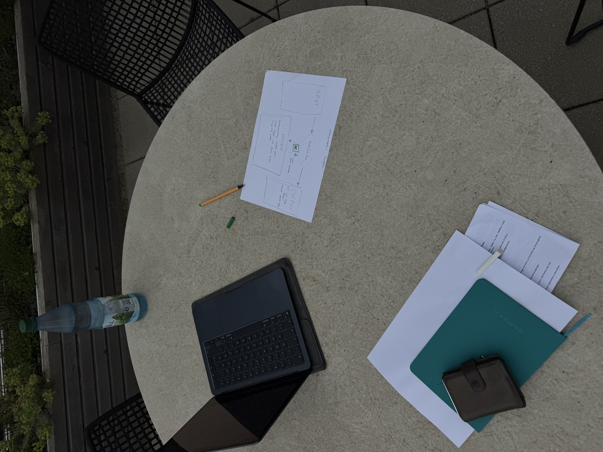
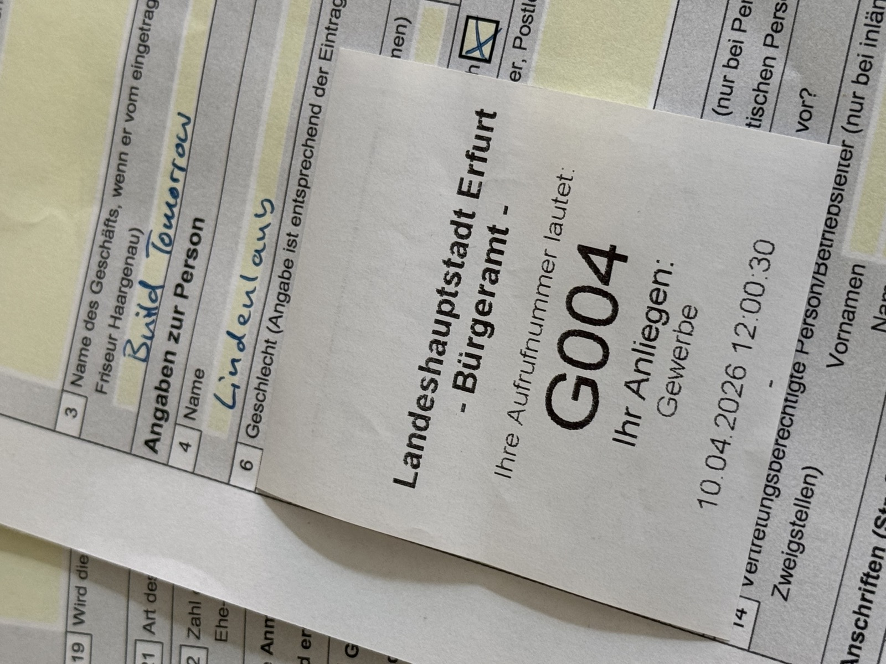
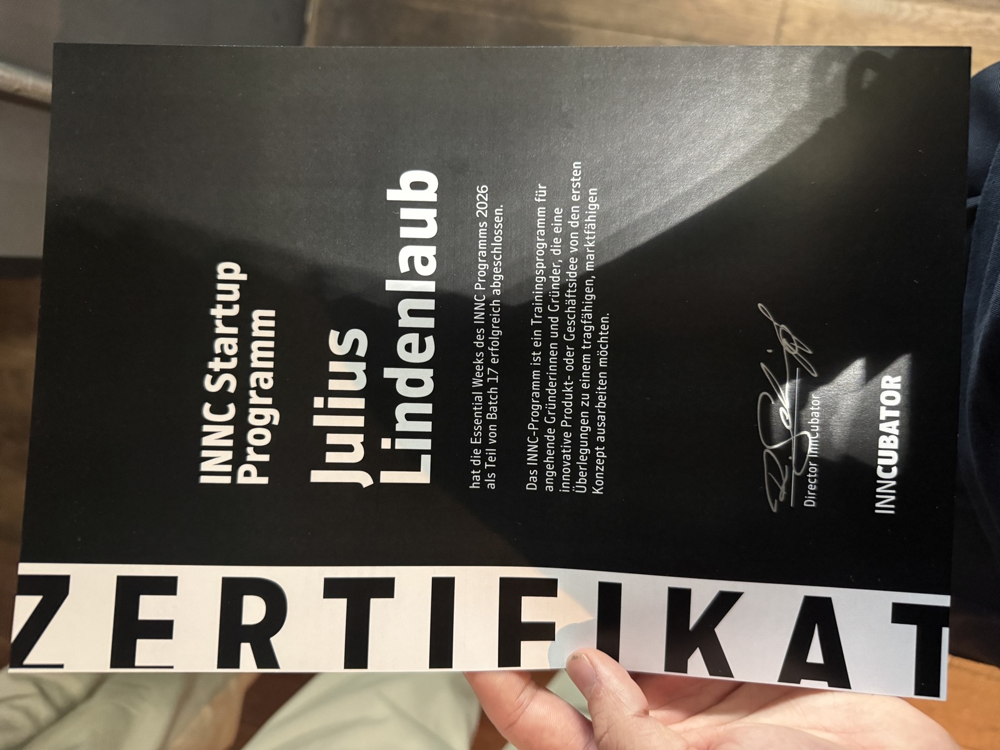
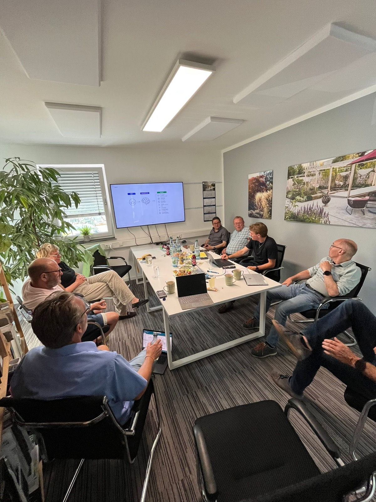

Praktikumsbericht · Management Center Innsbruck
März 2026 – Juni 2026
01
Digitalisierungsagentur für GaLaBau-Betriebe (Garten- und Landschaftsbau). Wir helfen kleinen und mittelständischen Betrieben dabei,
So bleibt mehr Zeit für das, was zählt: die handwerkliche Arbeit.
Einen klassischen Bewerbungsprozess gab es nicht — ich habe BuildTomorrow selbst gegründet:
Im Zentrum stand die Frage, ob der von mir wahrgenommene Bedarf wirklich existiert. Konkret wollte ich:
Mein konkretes Minimalziel: innerhalb von drei Monaten mindestens einen zahlenden Kunden gewinnen.
02
Wochen 1–4
Die ersten vier Wochen waren von intensiver Aufbau- und Konzeptarbeit geprägt. Im Zentrum stand der enge Austausch mit dem Partnerunternehmen aus meiner Bachelorarbeit, mit dem ich eine KI-gestützte E-Mail-Automation für den Garten- und Landschaftsbau entwickelt und in der Praxis getestet habe. In zahlreichen Telefonaten und Abstimmungen entstand so ein erster funktionierender Anwendungsfall. Parallel tauschte ich mich mit dem Branchenverband über mögliche Angebote aus, begann mit dem Aufbau der Website und machte mir grundlegende Gedanken zur Unternehmensstruktur. Entsprechend verbrachte ich einen Großteil dieser Phase am Laptop.
Den Abschluss bildete in der vierten Woche eine Mitgliederversammlung des Garten- und Landschaftsbauverbands Hessen-Thüringen in Frankfurt, an der ich über meinen Vater teilnehmen konnte. Dort sprach ich direkt mit meiner Zielgruppe über deren Bedarf und konnte die Geschäftsidee weiter schärfen.

Konzeptarbeit: Skizze der KI-gestützten Mail-Automation aus der Bachelorarbeit.
Wochen 5–8
In der zweiten Phase wurde aus dem Konzept ein handfestes Unternehmen. Ich stellte die Website fertig und schaltete sie live, um Kunden direkt ansprechen zu können. In Woche sechs folgte die offizielle Gewerbeanmeldung. Um nicht alles selbst neu erarbeiten zu müssen, suchte ich gezielt das Gespräch mit Unternehmern aus meinem Netzwerk, die bereits eigene Agenturen aufgebaut hatten — etwa zu Pricing, Organisationsstrukturen, Skalierungsmöglichkeiten und dem Aufbau von Vertrauen.
Gleichzeitig lief die Bachelorarbeit weiter: Das Erproben des Prototyps verstand ich zunehmend auch als unternehmerische Forschungsarbeit, aus der ich viel für BuildTomorrow mitnahm. In Woche sieben führte ich erste konkrete Gespräche mit der eng verbundenen Lindenlaub GmbH über mögliche Prozesse und Angebote.

Offizieller Start: Gewerbeanmeldung beim Bürgeramt Erfurt (10.04.2026).
Wochen 9–12
In den letzten vier Wochen wurde alles konkreter, praktischer und näher am Kunden. Ich nahm am INNC-Startup-Programm teil, das den Fokus auf Geschäftsmodell und unternehmerische Grundlagen legte. Zugleich hatte ich bereits zwei feste Aufträge der Lindenlaub GmbH sowie einen weiteren Auftrag eines zusätzlichen Unternehmens. Auch der KI-Workshop für die ERFA-Gruppe wurde in dieser Zeit vereinbart und kurz darauf durchgeführt.
Die Bachelorarbeit neigte sich dem Ende zu, und ich generierte die ersten Leads: konkrete Kundengespräche, die ich in dieser Phase anbahnte und die im Anschluss stattfanden. Aus der anfänglichen Konzept- und Aufbauarbeit war damit ein Unternehmen mit ersten Aufträgen und einer gefüllten Pipeline geworden.

Abschluss des INNC Startup-Programms (Batch 17) während der Praktikumsphase.
03
Einen klassischen typischen Arbeitstag gab es während des Praktikums kaum, da sich die Aufgaben und Schwerpunkte ständig verändert haben. Die ersten Wochen waren vor allem von Büroarbeit geprägt, beispielsweise der Entwicklung von Konzepten, der Vorbereitung von Projekten und organisatorischen Aufgaben. Mit der Zeit kamen jedoch immer mehr Kundentermine, Gespräche mit Betrieben sowie Workshops und Außentermine hinzu. Dadurch verlagerte sich die Arbeit zunehmend vom Büro in den direkten Austausch mit Kunden. Zusätzlich nahm ich während des Praktikums an einem Start-up-Programm teil, wodurch sich die Arbeitstage teilweise bis in die Abendstunden verlängerten.
Das übergeordnete Ziel während des Praktikums war nicht in erster Linie Umsatz — sondern Validierung. Die zentrale Frage lautete: Gibt es einen echten Bedarf an unabhängiger Digitalisierungs- und KI-Beratung im Garten- und Landschaftsbau? Und wenn ja, nehmen Betriebe dieses Angebot auch tatsächlich an?
Als konkretes Minimalziel hatte ich mir gesetzt, innerhalb von drei Monaten mindestens einen zahlenden Kunden zu gewinnen und eine bezahlte Rechnung vorweisen zu können — als klares Signal, dass das Konzept auch wirtschaftlich trägt.
Die Ergebnisse haben dieses Ziel deutlich übertroffen. Zum Ende der Praktikumsphase arbeite ich mit drei zahlenden Kunden zusammen: ein Projekt ist bereits abgeschlossen, ein weiteres kurz vor dem Abschluss, und darüber hinaus laufen mehrere umfangreichere Projekte mit längerem Zeithorizont. Zusätzlich befindet sich ein größeres Projekt in der konkreten Pipeline, und mit rund zehn weiteren Unternehmen stehe ich in aktivem Austausch.
Das wichtigste Ergebnis ist jedoch ein anderes: Die Grundannahme von BuildTomorrow hat sich bestätigt. Der Bedarf ist real, die Bereitschaft der Betriebe zur Zusammenarbeit ist vorhanden — und das Unternehmen passt in diesen Markt.
Eine besondere Highlight-Aufgabe während des Praktikums war die Durchführung eines KI-Workshops für eine ERFA-Gruppe aus dem Garten- und Landschaftsbau. Ziel des Workshops war es, das Thema KI praxisnah und verständlich zu vermitteln – von der Entwicklung seit ChatGPT bis hin zu agentischen KI-Systemen. Gemeinsam mit den Unternehmern wurden betriebliche Prozesse analysiert und überlegt, welche Aufgaben sich sinnvoll mit KI unterstützen oder automatisieren lassen. Dabei entstanden bereits erste kleine Prototypen, die direkt gemeinsam getestet wurden. Besonders spannend war zu sehen, wie groß das Interesse und die Offenheit gegenüber dem Thema auch bei Unternehmern war, die bisher wenig Berührungspunkte mit Technik hatten. Der Workshop war deshalb eines der größten Highlights des Praktikums und wird auch zukünftig ein wichtiger Bestandteil meiner Arbeit bleiben.

KI-Workshop für eine ERFA-Gruppe aus dem Garten- und Landschaftsbau.
Aus Studium und selbstständiger Praxis.
Branchenwissen, Netzwerk und Eigeninitiative.
Schneller Start durch starke Verbandsunterstützung — fast ein Jahr Vorlaufzeit mit dem VGL Hessen-Thüringen.
Verband enttäuschte trotz Interesse. Direkter Kundenkontakt über Mitgliederversammlung, Familiennetzwerk und Kaltakquise war deutlich wirkungsvoller.
Produkte und Leistungen müssen zuerst klar definiert sein, bevor Kunden überzeugt werden können.
Kundengespräche kamen vor der Produktdefinition — wer versteht was Betriebe brauchen und es konkret zeigt, überzeugt schneller als jedes Konzeptpapier.
Geschäftsmodell: ~70 % Beratung & Schulungen, ~30 % Umsetzung.
Beratung und Schulungen wurden komplett gestrichen — das Modell verschob sich vollständig zu individuellen Umsetzungsprojekten und Programmierung.
Die größte Überraschung war nicht das, was schwieriger wurde — sondern was einfacher ging. Sobald ich Kunden direkt zeigen konnte, was technisch möglich ist, wie es aussieht und was es kostet, entstand Bewegung. Das hat deutlich schneller funktioniert als erwartet. Der direkte Weg zum Kunden schlug letztlich jeden indirekten Vertriebsweg.
04
Frage 1
Im Arbeitsalltag bei BuildTomorrow kommen verschiedene KI-Tools zum Einsatz — je nach Aufgabe unterschiedlich. Die Nutzung lässt sich in drei Kategorien aufteilen:
Kommunikation & Text
Für Recherchen, Texterstellung, das Umwandeln von Sprachaufnahmen in strukturierten Text sowie allgemeine Kommunikationsaufgaben.
Entwicklung & Programmierung
Für den Aufbau des internen Vault-Systems, das die gesamte Unternehmensstruktur von BuildTomorrow abbildet, sowie für die Entwicklung von Prototypen und individuellen Lösungen für Kunden.
Design & Visualisierung
Für Logos, Präsentationen, Mockups, Grafiken und die visuelle Darstellung von Prozessen.
Frage 2
KI ist bei BuildTomorrow kein Hilfsmittel am Rand — sie ist die Grundlage, auf der das Geschäftsmodell überhaupt erst funktioniert. Ohne KI wäre es nicht möglich, kleinen GaLaBau-Betrieben individuelle digitale Lösungen zu einem Preis anzubieten, der für sie sinnvoll ist. Was früher aufwendige Programmierung für mehrere tausend Euro bedeutet hätte, lässt sich heute als Mockup oder Prototyp schnell austesten — direkt im Gespräch mit dem Kunden.
Das verändert auch, wie Entscheidungen getroffen werden: Statt lange zu planen und dann umzusetzen, wird zuerst ein Prototyp gebaut, getestet und dann gemeinsam entschieden, ob und wie es weitergeht. KI fungiert dabei gleichzeitig als Werkzeug und als ständiger Sparringspartner — für technische Fragen genauso wie für strategische Überlegungen.
Frage 3
KI war während des gesamten Praktikums allgegenwärtig — von der täglichen Kommunikation bis zur technischen Umsetzung. Besonders beeindruckend war ein konkretes Projekt rund um die Erstellung von Leistungsverzeichnissen im GaLaBau.
Ziel war es, aus historischen Projektdaten eine KI-gestützte Vorlage zu entwickeln, die selbstständig Muster und Strukturen erkennt und daraus neue Leistungsverzeichnisse vorschlägt. Was fasziniert hat: Die KI war in der Lage, aus unstrukturierten Daten verlässliche Strukturen abzuleiten — und sich durch iteratives Feedback selbst zu verbessern. Das Potenzial, das dabei sichtbar wurde, war unerwartet groß.
Frage 4
Das Potenzial für KI im Garten- und Landschaftsbau ist entlang der gesamten Prozesskette vorhanden — von der ersten Kundenanfrage bis zur abschließenden Dokumentation. Konkret bieten sich vor allem folgende Bereiche an: die Kalkulation und Erstellung von Angeboten, der Vergleich von Preisen und Lieferanten, die automatisierte Aufbereitung von Projektdokumentationen sowie die interne Kommunikation und Berichterstattung.
Der einzige Bereich, der sich der KI-Unterstützung weitgehend entzieht, ist die Arbeit auf der Baustelle selbst — dort bleibt das handwerkliche Können entscheidend. Alles drumherum jedoch ist für KI-Automatisierung zugänglich und wartet in den meisten Betrieben noch darauf, erschlossen zu werden.
05
Das wichtigste Mitnahmeeffekt ist die Bestätigung: Der Markt ist real, das Interesse ist vorhanden, und die Kombination aus technischem Know-how und echtem Branchenwissen aus der eigenen Ausbildung als Landschaftsgärtner ist in dieser Form einzigartig. Jemanden, der sowohl die Prozesse auf einer GaLaBau-Baustelle kennt als auch individuelle KI-Lösungen programmieren kann, gibt es kaum — und das wird von Unternehmern wahrgenommen.
Gleichzeitig nehme ich mit, dass die nächste Herausforderung organisatorischer Natur ist: Wie lässt sich das, was heute als individuelle Dienstleistung funktioniert, so strukturieren, dass mehr Betriebe erreicht werden können? Das mittelfristige Ziel ist, aus den aktuellen Projekten skalierbare Produkte zu entwickeln — also von der reinen Umsetzungsarbeit hin zu Lösungen, die wiederholt eingesetzt werden können.
Das Praktikum hat den Berufsweg klar definiert. BuildTomorrow wird weitergeführt und ausgebaut — das ist der Hauptfokus. Parallel dazu wird das Masterstudium in Management, Communication & IT am MCI aufgenommen, das das unternehmerische Fundament weiter stärkt. Studium und Unternehmen sind dabei keine Konkurrenten, sondern ergänzen sich: theoretische Konzepte fließen direkt in die Praxis ein, und die Praxis schärft den Blick für das, was im Studium wirklich relevant ist.
Das Ziel ist klar: BuildTomorrow wirtschaftlich tragfähig machen und in der Nische der GaLaBau-Digitalisierung weiter wachsen. Die Grundlage dafür ist gelegt — mit ersten zahlenden Kunden, einem validierten Markt und einem Geschäftsmodell, das funktioniert. Der nächste Schritt ist Skalierung: mehr Betriebe erreichen, Prozesse standardisieren und aus der Einzelbetreuung heraus ein Unternehmen aufbauen, das auch ohne den direkten persönlichen Einsatz bei jedem Kunden wächst.